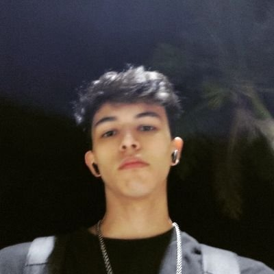

Alejandro Efraín Ibarra Armenta
Estudiante en ingeniería de software en Universidad ITSON, nacido el 26 de noviembre de 2004 en Ciudad Obregón, Estudio su primaria en la escuela Josefina Viuda De Gálvez en Pueblo Yaqui, Secundaria Benito Juárez y preparatoria en la escuela CBtis37, amante de los deportes, videojuegos, elotes y el pollo. Odia las verduras y comidas viscosas. Ha sus 13 años tuvo dos fracturas de brazo, la frase que lo representa es: “Recuerda que las cosas grandes, no se construyen en día, si no, un día ala vez “.
Daniel Alberto Flores Rodriguez
Estudiante en ingeniería de sofware en la Universidad ITSON